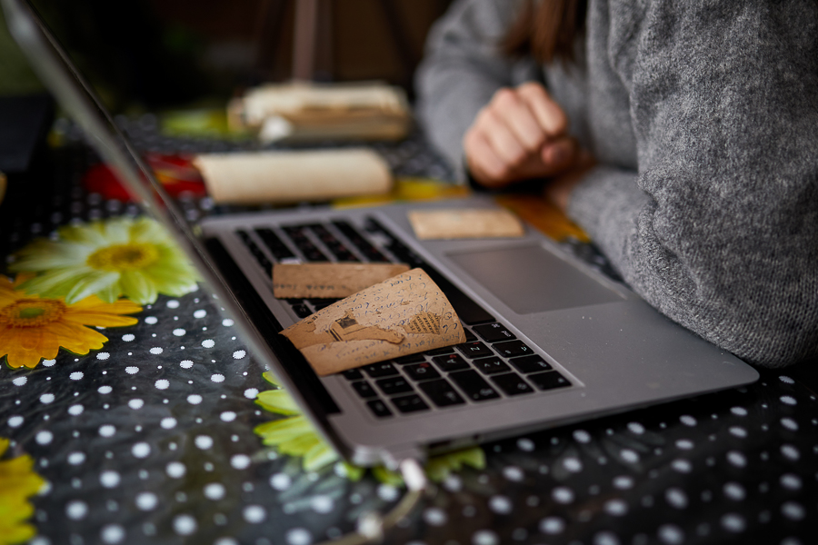

Пролог
Після мандрів Європою Христина Буній у 2018 році вирішила присвятити себе дослідженню Карпат — регіону, в якому вона народилася та зростала. Так виник проєкт Carpathian Cult, що через архівні сімейні фотографії відкриває відомі і незвідані фрагменти карпатської культури. Завдяки особистому підходу до роботи дослідниця змінює ставлення до локальної етнографії та робить її доступнішою для суспільства.
У кімнаті з білими стінами висять кілька картин та мапи. На підлозі, поличках, підвіконні розташувалися рослини в горщиках. У кутку стоїть невелика дерев’яна шафа з книгами про Карпати, Галичину, трави та ягоди. Скрізь у кімнаті трапляються сліди лісу: гілка дивакуватої форми, камінець, шишка, шматочок кори, травинки. Серед них є і фотографії: зокрема, гуцульської співачки Марії Кречунєк із люлькою.
Тут, серед гір, у місті Надвірна, «що сяє вогнями кохання і добрих надій», живе Христина Буній — засновниця проєкту Carpathian Cult, етнографка, яка досліджує рідний край. Вона займається йогою і мало сидить в інтернеті. Має велосипед та наплічник, з яким пройшла багато гірських стежок. А на питання, чого їй бракує, дівчина навіть не знає, що відповісти. «Мені всього вистачає. А чого не вистачає — то, мені здається, набудеться з часом», — впевнена вона. У Христини є все, бо у неї є Карпати.
Carpathian Cult
У лютому 2018 року Христина запостила перше фото на Instagram-сторінці, яку вона назвала carpathiancult. Говорить, що ідея прийшла до неї неочікувано.
Покинувши Львівську національну академію мистецтв, дівчина багато мандрувала Європою автостопом, знайомилася з різними людьми і пізнавала себе в інших країнах. Але кожна подорож закінчувалася поверненням додому, до гір. У 2017-му Христина приєдналася до артпростору «Дідова Хатчина» у карпатському селі Яворів. Цей проєкт досліджує гуцульську культуру в її природному середовищі та знайомить з нею всіх охочих. Христина волонтерила там графічною дизайнеркою і деякий час жила безпосередньо у «Дідовій Хатчині».
— Ця карпатська культура постійно була присутня навколо. Тож ти неминуче з нею стикався: чи то з місцевими людьми, чи то з побутовими речами, притаманними тільки цьому регіону. Кожен наш сусід — це окрема велика історія, великий колодязь локальної культури.
Для створення колажів та постерів у проєкті «Дідова Хатчина» дизайнерка збирала у хатах по сусідству старі фото і сканувала їх. Незчулася, як у неї сформувався великий архів оцифрованих фото не лише з Яворова, а й із сусідніх сіл та районів. Зображені на фото деталі гуцульської, бойківської культур та інших карпатських субетносів її вражали, і вона вирішила цим поділитися.
— Оскільки я людина з дизайнерським бекграундом, я не могла це все робити без візуальної складової. Тому почала формувати фотографії у триптихи. Розділяла їх за темами та візуальним рядом. І буквально кожного дня публікувала. А тим часом людей, яких це цікавило, серед підписників ставало все більше.
Збереження пам’яті
Зі сторінки carpathiancult в instagram народився цілий проєкт дослідження та популяризації карпатської культури. Христина обрала фотографію як інструмент пізнання з кількох причин.
— Фотографія — це факт. Факт існування певного явища чи людини. Фотографії з того часу не могли, наприклад, фотошопитись. Тож вони приходять до нас крізь віки такими, якими були.
Цифровий архів проєкту складають світлини з кінця XIX століття, коли була поширена портретна зйомка у студії, до кінця XX століття. Через фотографію засновниця Carpathian Cult розповідає про особливості національного строю (що має відмінності залежно від населеного пункту), притаманну карпатському регіону архітектуру, природу, ремесла, знакові події, традиції та побут жителів Карпат.
— Усе, що на фотографіях зазвичай зображено (приміром, одяг чи побутові елементи), створювалося людьми власноруч. Це унікальні елементи народного мистецтва і місцевої традиційної культури. І мені дуже подобається спостерігати за тим, як люди привносили красу в якісь побутові речі.
Сьогодні про цінність повсякденних речей Христині нагадують місцеві жителі, з якими вона регулярно спілкується. Під час однієї зі своїх поїздок дівчина опинилася у Биткові, у хаті Марії Максимюк. Під час перебирання сімейного архіву жінка зупинилася на одній фотографії, з якої позирали дівчата, вбрані у вовняні спідниці.
— У таких спідницях виходили заміж. А далі вони зберігалися протягом життя. Навіть потім, коли жінка помирала, її, як правило, з тов хоронили. Хустка шалянова — це була цінність того часу! Не кожна собі могла дозволити.
Крім того, що зображено на світлині, Христину цікавить також і саме фото як предмет комунікації та збереження пам’яті. Тут важливим є все: розмір світлини, її колір, напис на зворотному боці. Часом Христина натрапляє на фото, колоризовані вручну. Каже, що таким чином люди хотіли додати життя та яскравості своїм спогадам.
За її спостереженнями, сьогодні відновлення традиційної культури як ніколи актуальне, особливо для нащадків українських мігрантів. Тому вона веде і сторінку проєкту в instagram англійською мовою. З розвитком Carpathian Cult українські та іноземні підписники не лише висловлюють захоплення світлинами, але й питають, де можна більше дізнатися про те чи інше явище культури, розповідають власні історії та навіть впізнають своїх родичів на знімках.
Нині Христина має більше 4000 фотокарток із Гуцульщини, Буковини, Закарпаття та Бойківщини. Крім сімейних аматорських фото, дослідниця публікує відскановані листівки, фотографії елементів традиційного одягу та прикрас, робіт художників та скульпторів, а також різноманітні книжкові ілюстрації.
Золото Карпат
Інтерес Христини вже давно вийшов за рамки архівних світлин. Вона сама фотографує елементи побуту, хати, музейні експонати, фіксуючи автентичні деталі гірського життя. З 2019 року її проєкт має сторінку на платформі Soundcloud, де вона збирає карпатську музику, записану етнографами. Тут можна послухати і альбоми окремих музик, як-от родини Тафійчуків, цимбаліста Мирослава Палійчука, і мелодії, притаманні окремим регіонам (Прикарпаттю, Буковині).
Хоч основним напрямком проєкту залишається фотографія, Христина радіє кожній новій знахідці з незвіданої культури Карпат. Дівчина не береться за дослідження інших етнічних регіонів України. У фокусі передусім — Надвірна та села й містечка навколо неї. Каже, що має свій шлях, який воліє досліджувати найперше: від Биткова до Бистриці. Carpathian Cult саме такий, тому що він — про рідний край, про близьке та зрозуміле Христині.
— Коли їду по району, кажу, що сама — з Надвірної. Так для людей я автоматично стаю сусідкою — людиною, якій вони більше довіряють, більше її розуміють. Тому що ми говоримо однією мовою, маємо спільну географію. Будь-які матеріали, які приналежні до мого району, мені автоматично цікаві і близькі. Тому що я від цього краще розумію їхню культуру, їхній спосіб життя.
Дослідниця згадує, як іще у дошкільному віці вперше почула весільну ладканку — обрядову пісню, яку виконують під час покривання молодої. Тоді її вразило те, що на радісній події співали таку ледь не трагічну пісню. На думку Христини, подібні звичаї й досі зберігаються в Карпатах завдяки географії та місцевому ландшафту, адже в горах культура зазнає набагато менше впливу, ніж на рівнинній місцевості, де легше розвивати торгівлю, туризм та промисловість.
— Карпати мені видаються якраз тим місцем, де дуже добре по шпаринах шукати ту саму первинну культуру, яка зародилась на цьому місці, зростала сама в собі, маринувалася у власному соці, бродила і створювала свій автентичний вигляд, звук, смак, запах.
Нині молодь все менше цікавиться давніми ремеслами та часом полишає рідні краї, що ускладнює традицію передачі знань із вуст в уста. Натомість Христина їздить карпатськими селами та, як вона каже, добуває «золото Карпат, розсіяне по всіх горах», аби воно не згубилося і не забулося.
Експедиційні маршрути
Архівні сімейні фотознімки потрапляють до візуальної бібліотеки Сarpathian Сult різними способами. Коли друзі Христини дізналися про її проєкт, то порадили звернутися до своїх родичів по такі фото або й самі ділилися старими світлинами.
Ще один шлях розширення Христининого архіву — експедиції. Дівчина їде автобусом до населеного пункту, який її цікавить, а далі ходить вулицями та розпитує людей, чи мають вони чим поділитися. Наразі вона зосереджує свою увагу на дослідженні рідного регіону, проте в майбутньому планує відвідати словацькі, польські та румунські Карпати:
— Усі карпатські народи мають свої характерні риси. Вони дуже різноманітні, переливаються одна в одну. Мені цікаво за цим спостерігати і висвітлювати. Думаю, якщо цей задум удасться, то в майбутньому колекція тільки збільшуватиметься. Я над цим працюю. Кожен день. Трошки.
На додачу до виходів «у поле» Христина шукає власників колекцій старих фото у соціальних мережах:
— Деколи я прямо по групах шукаю якісь публікації. Буває, що у деяких групах сіл, наприклад, люди публікують старі фотографії. Відповідно, тоді я можу відразу звернутись до тої людини, яка це опублікувала, і дізнатися, чи є в неї більше фотографій. Іноді люди самі мені пишуть.
Так Христина познайомилася з Ярославом Лесюком, який походить із Білих Ослав. Він відповів на публікацію дівчини і запросив до себе. Виявилося, що його горище забите фотоальбомами. Виїжджаючи в експедиції чи цілеспрямовано до власників фото, з якими вона домовилась, Христина бере з собою сканер, ноутбук та штатив, на якому кріпить телефон. Коли дівчина приїхала до Ярослава і почала оцифровувати його фотоколекцію, він із кожною наступною фотографією перестрибував із однієї історії на іншу: то про маму, яка працювала зв’язковою УПА, то про роки життя в Нью-Йорку з цілими будинками сімей з Надвірної та Делятина. Ярослав додає, що в селі залишились самі пенсіонери, а комусь врешті треба передати ці історії:
— Пам’ять повинна бути збережена. Культурна, історична цінність має передаватись із покоління в покоління. Може, так в душі хоть щось заскрипить: звідки то воно, що було, як колись люди жили, чим колись займалися.
Крім оцифрування для свого архіву, Христина обов’язково записує розмову з героями, до яких приїздить. Поки сканує матеріали, розпитує власників про те, хто зображений на фото, про історію сім’ї, села, про характерні для цієї місцевості заняття. Герої охоче розповідають, пригадуючи своє дитинство, а ще — рідних та родинні традиції, які з часом відійшли:
— Колись було, пам’ятаю, як ше моя мама жила, на Святвечір у нас впродовж хати на стелі стояли драґарі (балки. — ред.). І їх, ті драґарі, перед святами вбирали. Робили такі кольорові ришки. І так само убирали образи́ (хатні ікони. — ред.).
Так Марія Максимюк з Биткова згадує, як раніше справляли зимові свята. Розповідає, що на другий Святий вечір, 18 січня, вони з сім’єю зазвичай прикрашали всю садовину стрічками. Ставили дідуха, а потім спалювали його на щастя. А на Водохреща ходили по свячену воду, щоб освятити подвір’я.
Описуючи обряд за обрядом, жінка помітно веселішає. Її розповідь підхоплює сусідка, теж Марія. Жінки діляться спогадами, перебиваючи одна одну. Раптом це щебетання обривається, Марія замовкає. І додає: «А тепер всьо сучасно».
Колекціонувати минуле
Не всі вбачають цінність у старовинних речах. Мешканці сіл часто продають бабусині сорочки перекупникам або ж закидають їх на горище, де вони доживають свій вік. Старовині пощастить, якщо власники віддадуть архівні фото в музеї. А в найкращому випадку до родинних архівів завітає Христина зі сканером.
— Таке вже не раз бувало. Люди часом кажуть: «Та в мене там якихось пару фоток. Може, щось подивитесь і воно вам знадобиться». Приходиш, а там під сотню фотографій, і кожна друга — просто вау!
Після оцифровування дівчина тиждень-два (залежно від кількості матеріалу) працює над обробкою фото — за потреби корегує колір і тон зображень — і надсилає цифровий архів тим, хто поділився з нею, аби їхня родина мала «візуальний спомин» на довгі роки. Ці ж фото вона потім групує за темами, як-от «Різдвяні свята» або «Килими», та виставляє на сторінці Carpathian Сult. Христині важливо поширювати набуті знання та матеріали, адже так вона втілює просвітницьку мету проєкту.
— Я більше за те, щоб якимись отриманими ресурсами ділитися. Тому що який тоді сенс колекціонувати все, якщо воно лишається у власності однієї людини?
Хоч ідея колекціонування їй не дуже близька, Христина охоче співпрацює з колекціонерами, які тримають приватні музеї. Вони є потужним джерелом інформації, позаяк збирають архівні фото в селах.
— Вони збирають не тільки матеріали, а й історії. Зазвичай володіють доволі обширними знаннями і хорошою пам’яттю. І можуть багато чого розказати, що навіть деколи місцеві вже позабували.
Христина має на своєму рахунку вже дві успішні співпраці з локальними приватними музеями: «Альпенштоком» у Яремче та музеєм Богдана Петричука в селі Бабин. Перший дозволяє відвідувачам не лише простежити по предметах побуту історію курортного містечка Яремче з часів Австро-Угорщини, а й приміряти автентичне гуцульське вбрання. А у музеї Богдана Петричука зібрані скрині, посуд та традиційний одяг Косівщини та Верховинщини. До того ж колекціонер власноруч відтворює вишиті сорочки, зокрема за фотографіями, які має у своєму архіві.
— Це взаємовигідно: я оцифровую їхні архіви — вони отримують цифрові версії. Я демонструю їхні роботи — їхня аудиторія може трохи зрости, а я тішуся з такого.
На думку Христини, причина низької відвідуваності краєзнавчих музеїв — брак медійного висвітлення. Це стосується й етнографії загалом. Ця наука завжди мала вузьке коло прихильників — зазвичай самих етнографів, для яких і випускали спеціальну літературу та організовували конференції. Але дівчина переконана, що етнографічні дослідження можуть захоплювати значно ширше коло людей, непричетних до цієї науки. Варто лише знайти правильні канали комунікації.
DIY-етнографка та Іван Гончар
Етнографія як наука про культуру та побут народів почала зароджуватися після Великої французької революції, наприкінці XVIII століття. Цей період у культурі називають романтизмом, характерною рисою якого є звернення до історичного коріння, народності. В Україні тоді також панували подібні тенденції: народна поезія переживала розквіт (Тарас Шевченко — яскравий тому приклад), по всій Російській імперії видавали збірки народних казок, пісень, прислів’їв тощо. Спочатку їх розглядали як суто літературне надбання, та й перші дослідники були дотичними до літератури, як-от Іван Котляревський, Микола Костомаров, Пантелеймон Куліш. А на початку XIX століття усну народну творчість збирали у науково-дослідницьких цілях.
У Львові, Києві та Харкові при університетах відкривають перші центри етнографії, які видають наукові праці (згодом — періодичні видання) та організовують експедиції. Вони цілеспрямовано працюють над вивченням історії та культури українського народу.
До 1920-х років у великих містах України діяли етнографічні товариства та інститути народознавства, проте тоталітарний радянський режим зупинив їхню роботу, а науковці зазнавали переслідування. У той час на Галичині та Закарпатті відкривають локальні краєзнавчі музеї та випускають регіональні періодичні видання.
Нині будь-хто має вільний доступ до величезного доробку українських етнографів. А українські університети пропонують здобути відповідну освіту з перспективою роботи в наукових інститутах. Христині ж імпонує роль DIY-етнографки. Це поняття вона запозичила у музичного лейблу Ored Recordings, який досліджує традиційну музику Кавказу. Його засновники кажуть, що, на противагу академічній, вони займаються експериментальною етнографією.
Подібні ініціативи з популяризації народної культури окремих регіонів стрімко розвиваються по всьому світі. З деякими Христина спілкується та обмінюється знахідками. Тож, приміром, коли їй трапляються фото бубнів, вона ділиться ними з Андрієм Левченко, співзасновником Школи традиційної музики, який досліджує бубни в Україні. А з Уляною Явною, дослідницею старовинних речей та періодики 1920—1930-х років, обмінюється світлинами красивих карпатських хат.
— У майбутньому хотілось би бути гордою етнографкою, дослідницею. Але без ступенів, без усяких особливих почестей. Просто людиною, яка займається тим, що їй подобається, і живе з цього.
Зібрані Христиною світлини використовують у відеовиставках, у медіа і навіть у розробці одягу (в якості зразків). Дівчину захоплює те, якими шляхами йдуть оцифровані нею світлини, і це мотивує її продовжувати свою справу. Що далі, то більш систематичного характеру набуває робота Христини над проєктом Carpathian Cult. Експедиції, обробка фотографій та робота з текстовою частиною публікацій займають значний час, тому вона складає контент-план, за яким публікує матеріали. Це вже її робота. За допомогою платформи Patreon, яка дозволяє усім охочим фінансово підтримувати незалежних творців, Христина має невеличкий щомісячний дохід і велику мотивацію розвивати проєкт.
— Я вважаю, що це хороший показник того, що навіть такі, здавалось би, специфічні, не зовсім розважальні чи не зовсім типові медійні проекти можуть мати фінансову підтримку. А це означає, що вони є актуальними і люди готові стимулювати їхній розвиток.
Patreon став також додатковим майданчиком для більш інформаційно наповнених публікацій. Тут вона ділиться фільмами, статтями й книгами на тему карпатської культури та розповідає про її видатних діячів. Серед них, приміром, Юрій Юркевич — лісівник та краєзнавець, який відновлював лісові ресурси Карпат після Другої світової війни та фіксував природу і традиційну культуру на фото. Христина вважає його за приклад і вчиться у нього ставленню до навколишнього середовища.
Христина мріє про те, щоб у кожному етнічному регіоні України досліджували та популяризували традиційну культуру. Вона впевнена, що такі ентузіасти точно є, і називає їх Іванами Гончарами XXI століття. Діяльність цього видатного українського етнографа, чия колекція стала київським музеєм, теж починалася з особистого інтересу, як і в Христини. Це дає надію, що мрія етнографки таки здійсниться.